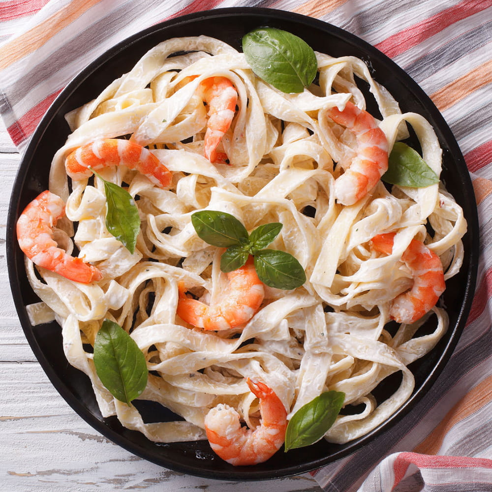
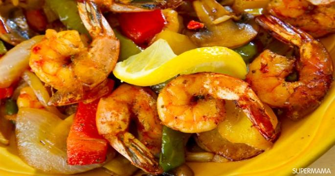

محتويات
- طاجن الجمبري
- جمبري بالزبد
- مكرونه فيبونتشي بالجمبري
- فاهيتاالجمبري
- أرز بالجمبري
- طاجن جمبري مشوي
- جمبري بالصويا صوص
الجمبري من الأصناف البحرية المحببة للجميع ولا يختلف على مذاقه اثنان، فبالإضافة لقيمته الغذائية له فوائد عديدة في محاربة العديد من الأمراض مثل السرطان والسكر وضعف العظام ومشاكل البشرة والشعر لما يحتويه من فيتامينات ومعادن كالكالسيوم والمغنيسيوم والفسفور وفيتامين "د"، وكذلك فهو يعد الوجبة المثالية قليلة السعرات الحرارية التي تمنحك البروتين اللازم لجسمك إذا ما اتبعت حمية غذائية. "سوبرماما" أعدت لكِ قائمة 7 طرق مختلفة لإعداد الجمبري اختاري منها ما يناسبك ذوقك وذوق أسرتك
بالخطوات: طريقة تنظيف السمك والجمبري-
طاجن الجمبري
-
المقادير:
- كيلو(1000 جم) جمبري
- 4 ثمرات طماطم مبشوره
- 8 فصوص ثوم مفرومه
- 2 بصله كبيره مقطعه مكعبات
- 2 فلفل رومي
- معلقه صغيرة (5 جم) بهارات سمك
- معلقه صغيرة (5 جم) كمون
- معلقه صغيرة (5 جم) ملح
- معلقه صغيرة (5 جم) فلفل
- معلقه صغيرة (5 جم) ثوم بودره فلفل اسود
- معلقه صغيرة (5 جم) ثوم بودره
- معلقه صغيرة (5 جم) بصل بودره
- 2 معلقه كبيره(25 جم) صلصه
- عصير 2 ليمونة
-
الطريقه:
- فصصي رؤوس الجمبري من ربع كمية الجمبري ثم شوحيه مع البصل والثوم في قليل من الزيت علي النار
- أضيفي الطماطم المشورة والفلفل الأخضر والصلصة ،ثم الملح والفلفل و بهارات السمك والكمون وعصير الليمون و اتركيها تتسبك
- أضيفي بقيه الجمبري ، وأتركيه حتي ينضج (يتغير لون الجمبري من 5-10 دقائق)
- ضعيه في أناءمناسب للفرن ،وأدخليه تحت الشوايه حتي يحمر الوجه
-
جمبري بالزبد
-
المقادير:
- كيلو(1000 جم) جمبري
- 2 معلقه(25 جم) زبد
- معلقه كبيره (15 جم) زيت
- 4 فصوص ثوم مفرومه
- كوب(250 مل) كريمه طهي
- معلقه صغيرة (5 جم) ملح
- معلقه صغيرة (5 جم) فلفل اسود
- معلقه صغيرة (5 جم) كمون
- معلقه صغيرة (5 جم) بابريكا
-
الطريقه:
- في أناء عميق ، ضعي الزبد و الزيت علي النار ، ثم أضيفي الثوم والجمبري والتوابل
- بمجرد أن يتغير لون الجمبري ، أضيفي كريمه الطهي و اتركيه 10 دقائق علي درجه حراره منخفضه حتي ينضج
-
مكرونه فيبونتشي بالجمبري

-
المقادير:
- ½ كيلو (500 جم) جمبري
- كيس مكرونه فيبونتشي
- ملعقة كبيره(12.5 جم) زبد
- 5 فصوص ثوم مفرومه
- ثمرة فلفل رومي مقطعه مكعبات صغيره
- كوب (250 جم) كريمه طبخ
- 1\2 كوب (100 مل) مشروم
- معلقه صغيره (5 جم) خل
- معلقه صغيرة (5 جم) ملح
- معلقه صغيرة (5 جم) كمون
- معلقه صغيرة (5 جم) بابريكا
- معلقه صغيرة (5 جم) زعتر
- معلقه صغيرة (5 جم) ريحان
- أوراق بقدونس مقطعه للتزيين
-
الطريقه:
- نضفي الجمبري جيدًا ، وفي أناء عميق ضعي الزبد وأضيفي الثوم والجمبري والتوابل والخل، و بمجرد أ ن ينضج الجمبري ضعي المشروم
- قلبي لجمبري جيدًا، وأضيفي الزعتر و الريحان و كريمه الطهي
- اسلقي المكرونه ، واتركيها جانبًا حتي تمام نضج الجمبري
- اضيفي الخليط بعد غليانه جيدًا علي المكرونه المسلوقه
- زيني المكرونه بأوراق البقدونس
-
فاهيتاالجمبري

-
المقادير:
- ½ كيلو (500 جم) جمبري مقشر ومنظف
- بصلة كبيرة مقطعة شرائح
- 3 ثمرات فلفل أخضر وألوان
- عصير 2 ليمونة
- 3 ملعقة كبيرة (45 مل) زيت
- معلقه صغيرة (5 جم) بابريكا
- معلقه صغيرة (5 جم) ثوم بودره
- معلقه صغيرة (5 جم) بصل بودره
- معلقه صغيرة (5 جم) كمون
- معلقه صغيرة (5 جم) فلفل حار (حسب الرغبه)
- ملعقة صغيرة(5 جم) كزبرة جافة مطحونة ملح
- معلقه صغيرة (5 جم) فلفل اسود
- أوراق بقدونس مقطعه للتزيين
- ضعي الجمبري والتوابل وعصير الليمون وملعقة زيت في إناء عميق وقلبي جيدًا، واتركيه في الثلاجة ساعتين على الأقل.
- ضعي ملعقة الزيت الأخرى في إناء على النار، وأضيفي الجمبري حتى يتغير لونه قليلًا.
- في إناء آخر، ضعي سخني ملعقة الزيت الثالثة على النار، وضعي فيه البصل والفلفل وقلبيهما حتى يذبلا.
- أضيفي الجمبري، وقلبي جيدًا لمدة 10 دقائق تقريبًا.
- قدميه بعد تزيينه بالبقدونس
-
أرز بالجمبري
-
المقادير:
- ½ كيلو (500 جم) جمبري
- ثمرة بصل مفرومة
- 4 فصوص ثوم مفرومة
- 2 ملعقة كبيرة (30 مل) زيت
- 2 كوب (300 جم) أرز أبيض
- ملعقة صغيرة (5 جم) كركم
- ملعقة صغيرة (5 جم) كمون
- ملعقة صغيرة (5 جم) ملح
- ملعقة صغيرة (5 جم) فلفل
- نظفي الجمبري جيدًا.
- في إناء عميق، ضعي ملعقة زيت على النار، ثم أضيفي الثوم والجمبري مع التقليب المستمر، وارفعيه عن النار قرب مرحلة النضج.
- في إناء آخر، ضعي ملعقة الزيت الثانية، وأضيفي البصل وقلبيه جيدًا على النار حتى يأخذ اللون الذهبي.
- أضيفي الأرز بعد غسله وتصفيته، وقلبيه معه البصل قليلًا.
- أضيفي المياه بحيث تغطي الأرز.
- أضيفي جميع البهارات وعندما تقل المياه، أضيفي الجمبري وقلبيه جيدًا واتركيه على نار هادئة جدًّا مع تغطيته حتى تمام النضج.
-
طاجن جمبري مشوي
-
المقادير:
- ½ كيلو (500 جم) جمبري مقشر ومنظف
- 6 فصوص ثوم مفرومة
- عصير 2 ليمونة
- 2 ملعقة كبيرة (30 مل) زيت
- ملعقة صغيرة (5 جم) ملح
- ملعقة صغيرة (5 جم) فلفل
- ملعقة صغيرة (5 جم) كمون
- ملعقة صغيرة (5 جم) بابريكا
- أوراق بقدونس مقطعة للتزيين
- اخلطي جميع المكونات في إناء عميق، واتركيها في الثلاجة لثلاث ساعات على الأقل.
- صفي الجمبري من التتبيلة، ولا تتخلصي منها.
- ضعي الجمبري في الفرن حتى يتغير لونه، ثم اقلبيه على الوجه الآخر.
- عند تمام النضج، أخرجيه وأضيفي عليه التتبيلة وهو ساخن، وقدميه بعد تزيينه بقليل من البقدونس الطازج.
-
جمبري بالصويا صوص
-
المقادير:
- ½ كيلو (500 جم) جمبري
- 3 ملاعق (45 مل) زيت زيتون
- 2 بصلة كبيرة مقطعة حلقات
- ثمرة جزر كبيرة مقطعة
- ثمرة فلفل رومي كبير مقطعة حلقات
- 2 ثمرة فلفل ألوان مقطع حلقات
- 2 ثمرة كوسة مقطعة حلقات (حسب الرغبة)
- 2 ملعقة (30 مل) صويا صوص
- 2 ملعقة (30 مل) كاتشب
- 2 ملعقة (30 مل) خل
- 2 ملعقة (30 مل) سكر
- ملعقة صغيرة (5 جم) ملح
- ملعقة صغيرة (5 جم) فلفل أسود
- ملعقة صغير (5 جم) كمون
- ¼ كوب (50 جم) ماء
- ملعقة كبيرة (10 جم) نشا
-
الطريقه:
- شوحي الجمبري في زيت الزيتون على نار عالية، ثم أخرجيه واتركيه جانبًا.
- في الإناء نفسه، ضعي البصل والجزر والفلفل والكوسة وقلبي قليلًا حتى يتغير لونها.
- أضيفي الجمبري مرة أخرى، ثم باقي المكونات.
- بعد أن يغلي الخليط، قلبي النشا في ربع كوب الماء حتى الذوبان، وأضيفيه إلى الجمبري وقلبي جيدًا حتى يصل الصوص لدرجة السمك التي تفضلينها.


الطريقه:
الطريقه:

الطريقه: